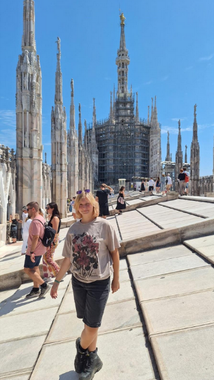

Ik ben Charlotte Levering, ik ben 16 jaar en ik ben geboren in Alkmaar maar ik woon in Heiloo. Ik zat op PCC Oosterhout.
Ik volg de opleiding software developer en wil de richting in game developer, daarvan wil ik reizen en online op de weg werken.
Er is niks speciaals eigenlijk. Het is een best stil dorpje met weinig winkels maar ze hebben en best mooi bos(je)

Lees ik boeken
Minecraft, Stardew valley. Sommige cozy games.
Tekenen
Schrijven

Schrijven, ideeën ontwikkelen.

- Muziek
- Familie
- Vriend
- Lezen
- Emo/Gothic style
- Monster
- Witchcraft
- Games
- Kuromi
- Creative dingen